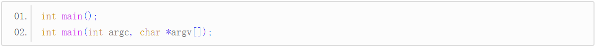

【本文结构】
- 17、main()函数的高级用法：接收用户输入的数据
- main() 是C语言程序的入口函数，有且只能有一个，它实际上有两种标准的原型：

- 第二种原型在实际开发中也经常使用，它能够让我们在程序启动时给程序传递数据。
- argc 表示传递的字符串的数目，
- argv 是一个指针数组，每个指针指向一个字符串（一份数据）。
- 一个程序在启动时允许系统或用户给它传递数据，Windows 和 Linux 都支持，这些数据以字符串的形式存在，多份数据之间以空格分隔。
- 也就是说，用户输入的多份数据在程序中表现为多个字符串。
- 给程序传递数据的一种方法就是从控制台运行程序，
- 在 Windows 下就是从 cmd（命令提示符程序）运行，
- 在 Linux 下就是从终端（Terminal）运行，本节以 Windows 为例讲解。
- 我们来看一个具体的例子：
#include <stdio.h>
int main(int argc, char *argv[]) {
int i;
printf("The program receives %d arguements, they are:\n", argc);
for (i = 0; i < argc; i++) {
printf("%s\n", argv[i]);
}
return 0;
}
- 将生成后的程序放在 C:\Users\EZChe\Desktop\KeepStudy\C\Projects\cDemo\Debug\ 目录下，命名为cDemo.exe，打开 cmd（命令提示符程序），输入: C:\Users\EZChe\Desktop\KeepStudy\C\Projects\cDemo\Debug\cDemo.exe C语言中文网 c.biancheng.net C-Lang， 程序的运行结果如下：
函数的高级用法：接收用户输入的数据_files/Image [1].png)